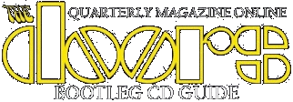

|
the magazines:
|
exclusive DQM content:
|
|||||
|
new articles, reviews, etc:
|
your guide to the world of bootlegs:
|
|||||
|  | ||||||
The Doors Quarterly Magazine was founded in 1983 by long time Doors fan
Rainer Moddemann. In fact it was Ray Manzarek who brought up the
idea of starting a fanclub,
realising that Rainer was among the world's top collectors and
connoisseurs of all things Doors.
Starting with a small but dedicated group of followers, the
magazine soon found growth in both recognition and quality.
Always a unique source of first hand news and
information, its exclusiveness never failed to amaze Doors fans
in those long gone days before the internet was a fact. The DQ
became a world wide renowned publication,
much loved for its insightful mixture of interviews, articles,
reviews, photos, news and so on. If it only even remotedly
concerned the Doors, the Quarterly would be on top of
it and Doors people would know. The DQ was a most reliable
critique, telling collectors exactly what was hot and what was
not.
Despite the unstoppable growth of and increasing interest in the
club and magazine throughout the Nineties, by the end of the
decade costs for publishing and shipping had risen
seriously. Besides that, there now was this unstoppable force
called the world wide web, news was being spread at lightning
speed and everything became available at the blink
of an eye. Before the turn of the Millennium, DQ #37 wrapped
things up in June of 1999 - sad but true.
Sometime in 2012 I messaged Rainer on Facebook and told him about
my ideas of resurrecting the DQ, online. The magazines could be
digitised, made available for all to download
and (re)discover the world's longest running and finest Doors
fanzine ever; and still we could do so much more... Much to my
delight Rainer agreed and this is exactly what you are
looking at now: welcome to "The Doors Quarterly Magazine
Online," a tribute to a legend.
Kevin Chiotis, co-administrator - September 2014.